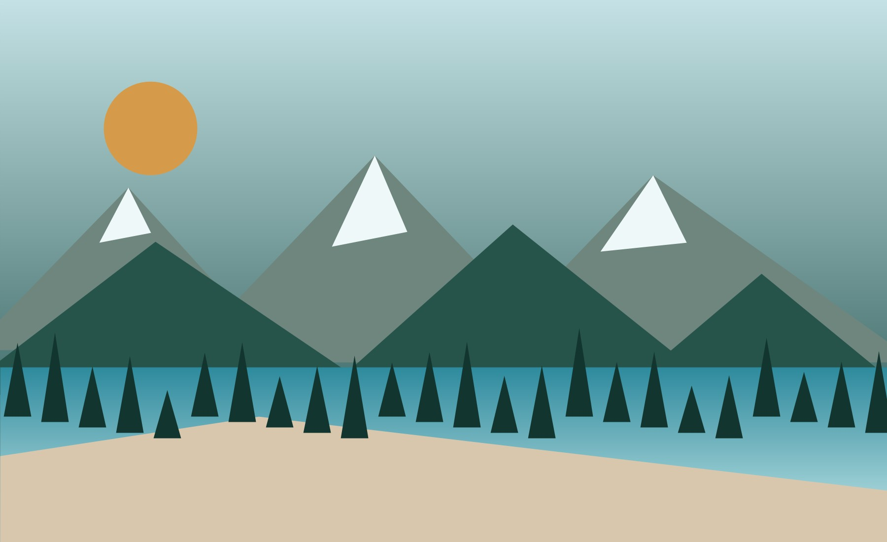

Travel Day & Banff Arrival
Rolling into Banff, settling near Hidden Ridge Way, and getting the first mountain views.

Trip Recap
This site is a warm, family-friendly recap of the Banff and Canadian Rockies trip, made for sharing favorite views, small memories, map links, videos, and the day-by-day story with friends and family.
Day by Day
Rolling into Banff, settling near Hidden Ridge Way, and getting the first mountain views.
Glacier water, classic lake overlooks, and the kind of blue that makes every photo feel unreal.
High alpine boardwalks, canyon waterfalls, and a relaxed evening around Canmore.
A day for big valley views, cold mist, and the quieter side of the Canadian Rockies.
Waterfall trails, final scenic stops, and one last round of mountain air.
Packing up the memories, swapping favorite photos, and heading home from the Rockies.
Best Of
Photo Journal
Places
Motion
Full Archive
The complete trip archive can live in Google Photos while this site keeps a smaller curated story.